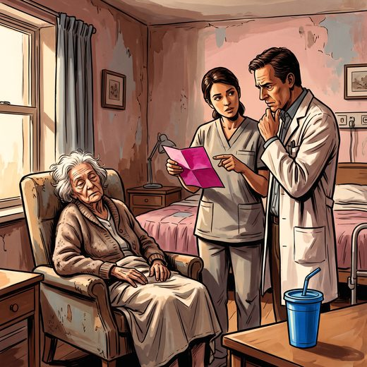

Consulta rápida à beira do leito
Condutas, doses e interações.
Referências da aula · 8
- 2023 American Geriatrics Society Beers Criteria Update Expert Panel. American Geriatrics Society 2023 updated AGS Beers Criteria for potentially inappropriate medication use in older adults. J Am Geriatr Soc. 2023;71(7):2052-81. PMID 37139824. doi:10.1111/jgs.18372.PubMedDOI
- Livingston G, Huntley J, Liu KY, et al. Dementia prevention, intervention, and care: 2024 report of the Lancet standing Commission. Lancet. 2024;404(10452):572-628. PMID 39096926. doi:10.1016/S0140-6736(24)01296-0.PubMedDOI
- Serrano-Pozo A, Escott-Price V, Grinberg LT, et al. Alzheimer’s disease. Lancet. 2026;407:2241-62. PMID 42208565. doi:10.1016/S0140-6736(26)00198-4.PubMedDOI
- O’Mahony D, Cherubini A, Guiteras AR, et al. STOPP/START criteria for potentially inappropriate prescribing in older people: version 3. Eur Geriatr Med. 2023;14(4):625-32. PMID 37256475. doi:10.1007/s41999-023-00777-y.PubMedDOI
- Brasil. Ministério da Saúde. Conitec. Relatório de Recomendação nº 1.051: PCDT da Doença de Alzheimer. Brasília: Conitec; 2025.
- Reus VI, Fochtmann LJ, Eyler AE, et al. The American Psychiatric Association practice guideline on the use of antipsychotics to treat agitation or psychosis in patients with dementia. Am J Psychiatry. 2016;173(5):543-6. PMID 27133416. doi:10.1176/appi.ajp.2015.173501.PubMedDOI
- Schneider LS, Dagerman KS, Insel P. Risk of death with atypical antipsychotic drug treatment for dementia: meta-analysis of randomized placebo-controlled trials. JAMA. 2005;294(15):1934-43. PMID 16234500. doi:10.1001/jama.294.15.1934.PubMedDOI
- Van Leeuwen E, Petrovic M, van Driel ML, et al. Withdrawal versus continuation of long-term antipsychotic drugs for behavioural and psychological symptoms in older people with dementia. Cochrane Database Syst Rev. 2018;(3):CD007726. PMID 29605970. doi:10.1002/14651858.CD007726.pub3.PubMedDOI
Documentos oficiais
Leis e publicações do Ministério da Saúde sobre o cuidado da pessoa idosa, de acesso livre.
Abrir os documentos